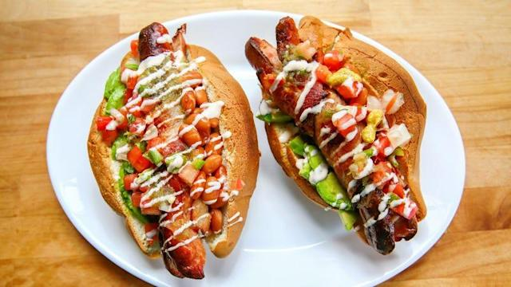

Sonoran Hot Dog

Sonoran Hot Dog
Ready to try these tasty heart attack dogs? Originating in Mexico and making their way to the United States, this hot dog throws authentic mexican cuisine through a loop. Do not plan to go back to work after eating these.
Ingredients
- Buns
- Beef Hot Dogs
- Thin Bacon
- Sliced onions (for sauteing) or chopped if eaten raw
- Chopped tomatoes
- Condiments: mayonnaise, mustard, ketchup, hot sauce, salt & pepper
- Highly recommended eating them with Chiles Toreados. All Hot Dog places in Mexico serve them with these chiles.
- Optional: avocado, whole cooked beans, sauted mushrooms. The originals were never made with these ingredients but you're more than welcome to do!
Steps
- Wrap the hot dog with bacon
- Cook the hot dog and onions in a large skillet
- Steam the buns
- Place hot dog in bun
- Add about 1 tablespoon of cooked or raw onions
- Add about 2 tablespoons of chopped tomato
- Spread mayonnaise over tomatoes and press lightly to blend tomatoes with mayo. Add mustard, ketchup & hot sauce if you like.